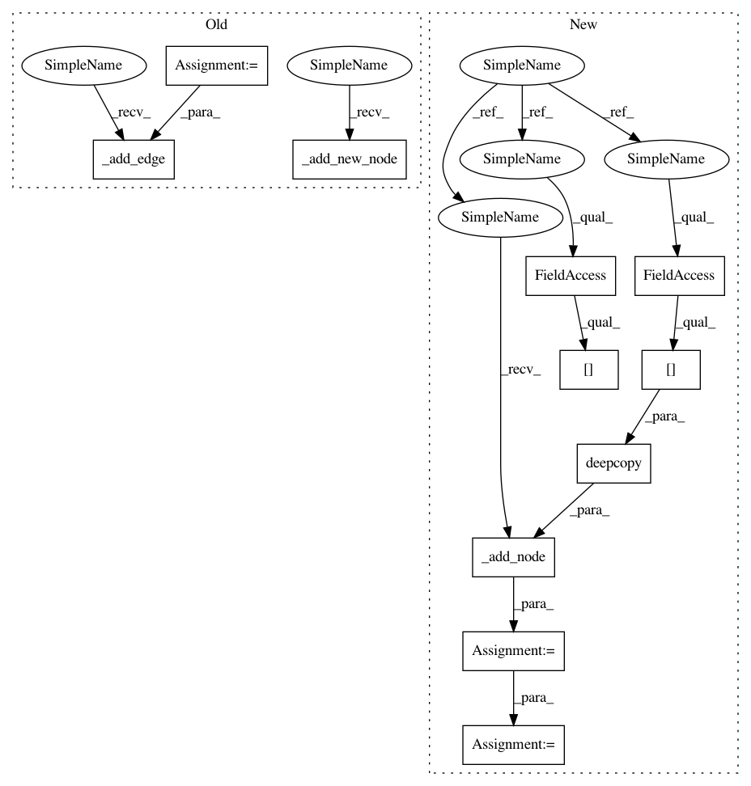

5b3af9ff43bc61f8034f1202a2b57f21c8ee3771,autokeras/graph.py,Graph,to_add_skip_model,#Graph#Any#Any#,377
Before Change
skip_output_id = conv_block_input_id
for index, layer_id in enumerate(layer_list):
layer = self.layer_list[layer_id]
new_node_id = self._add_new_node()
self._add_edge(deepcopy(layer), skip_output_id, new_node_id)
skip_output_id = new_node_id
// Add the conv layer
layer2 = StubConv(self.layer_list[start_id].filters, self.layer_list[end_id].filters, 1)
new_node_id = self._add_new_node()
self._add_edge(layer2, skip_output_id, new_node_id)
skip_output_id = new_node_id
// Set weights to the additional conv layer.
After Change
return self._block_end_node(layer_id, Constant.CONV_BLOCK_DISTANCE)
def to_add_skip_model(self, start_id, end_id):
Add a weighted add skip connection from after start node to end node.
Args:
start_id: The convolutional layer ID, after which to start the skip-connection.
end_id: The convolutional layer ID, after which to end the skip-connection.
self.operation_history.append(("to_add_skip_model", start_id, end_id))
conv_block_input_id = self._conv_block_end_node(start_id)
conv_block_input_id = self.adj_list[conv_block_input_id][0][0]
dropout_input_id = self._conv_block_end_node(end_id)
// Add the pooling layer chain.
layer_list = self._get_pooling_layers(conv_block_input_id, dropout_input_id)
skip_output_id = conv_block_input_id
for index, layer_id in enumerate(layer_list):
skip_output_id = self.add_layer(deepcopy(self.layer_list[layer_id]), skip_output_id)
// Add the conv layer
new_conv_layer = StubConv(self.layer_list[start_id].filters, self.layer_list[end_id].filters, 1)
skip_output_id = self.add_layer(new_conv_layer, skip_output_id)
// Add the add layer.
dropout_output_id = self.adj_list[dropout_input_id][0][0]
add_input_node_id = self._add_node(deepcopy(self.node_list[dropout_output_id]))
add_layer = StubAdd()
self._redirect_edge(dropout_input_id, dropout_output_id, add_input_node_id)
self._add_edge(add_layer, add_input_node_id, dropout_output_id)
self._add_edge(add_layer, skip_output_id, dropout_output_id)
add_layer.input = [self.node_list[add_input_node_id], self.node_list[skip_output_id]]
add_layer.output = self.node_list[dropout_output_id]
self.node_list[dropout_output_id].shape = add_layer.output_shape
// Set weights to the additional conv layer.
if self.weighted:
In pattern: SUPERPATTERN
Frequency: 3
Non-data size: 11
Instances
Project Name: keras-team/autokeras
Commit Name: 5b3af9ff43bc61f8034f1202a2b57f21c8ee3771
Time: 2018-08-01
Author: jin@tamu.edu
File Name: autokeras/graph.py
Class Name: Graph
Method Name: to_add_skip_model
Project Name: keras-team/autokeras
Commit Name: 5b3af9ff43bc61f8034f1202a2b57f21c8ee3771
Time: 2018-08-01
Author: jin@tamu.edu
File Name: autokeras/graph.py
Class Name: Graph
Method Name: to_concat_skip_model
Project Name: keras-team/autokeras
Commit Name: 5b3af9ff43bc61f8034f1202a2b57f21c8ee3771
Time: 2018-08-01
Author: jin@tamu.edu
File Name: autokeras/graph.py
Class Name: Graph
Method Name: _insert_new_layers
Project Name: keras-team/autokeras
Commit Name: 5b3af9ff43bc61f8034f1202a2b57f21c8ee3771
Time: 2018-08-01
Author: jin@tamu.edu
File Name: autokeras/graph.py
Class Name: Graph
Method Name: to_add_skip_model